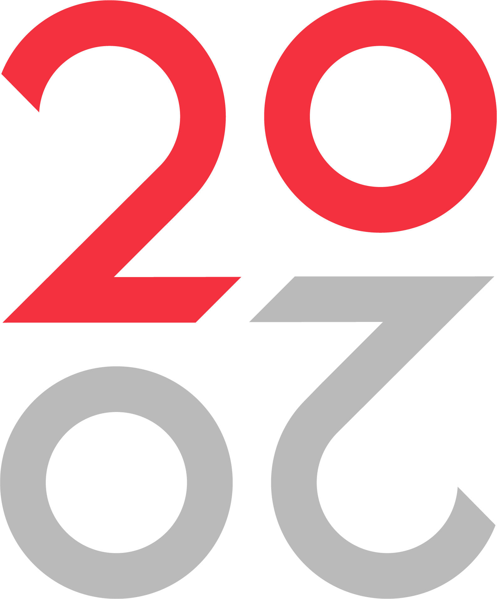

1. Choose your module
Select the module you are submitting against (Module A through Module H).

The Project Controls AI Powered Marking Companion reviews your module submissions against our published assessment criteria and returns a detailed, structured mark sheet — helping you improve before your final tutor review.
A simple three-step process built around our published course criteria.
Select the module you are submitting against (Module A through Module H).
Attach your written assignment, report, or exercise workbook as a PDF or Word document.
The AI returns a criteria-aligned mark sheet with strengths, gaps, and suggested improvements.
Complete each step below. Your submission is assessed against our official Project Controls criteria.
Generated from your submission against the official module criteria.